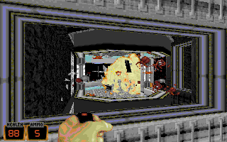
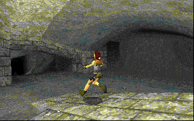
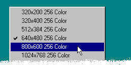
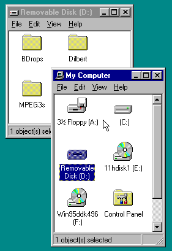
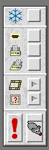

PCPro 3: the fastest ever PC support for RISC OS |
Aleph One have been pioneering PC support software and hardware for RISC OS since 1990; eight years on, we're still developing and improving new solutions for our customers. PCPro 3 represents the culmination of a year's work on our established PCPro software. Here's a list of exactly what we've improved:
|
 Duke Nukem 3D  Tomb Raider |
Major video speedupsYour favourite DOS games now go faster, thanks to these improvements:
|
More news on which games work can be found at the PC Card games compatibility list. Please note this list is not maintained by Aleph One, and we cannot be held responsible for inaccuracies.
Added Windows support
Other operating systems
Support for these operating systems is in the pipeline, and will be a chargeable upgrade for PCPro 3 owners. |
  |
|
 |
Easier to use
|
Prices quoted are for single-machine licenses. For a site license, multiply the single-user price by the square root of the number of machines on your site, rounded up.
| Upgrades from PCPro 2 | |
| PCPro 3 | £40 |
| PCPro 3 + Network Links (for current owners of Network Links) | £40 |
| PCPro 3 + Network Links | £70 |
| New customers | |
| PCPro 3 | £70 |
| PCPro 3 + Network Links | £90 |
| Extension packs (when purchased separately) | |
| Network Links | £30 |
| Other OS support (not yet available) | £50 |
Place your order by phoning +44 (0)1223 811679 or email orders@aleph1.co.uk, quoting your Visa card number, expiry date and the exact name on the card.
Or post a cheque or your card details to Aleph One Limited, The Old Courthouse, Bottisham, Cambridge, CB5 9BA.We have made a special version available for prospective purchasers to evaluate PCPro 3's functionality. It has been deliberately limited in several ways. It will:
Before downloading please note this is not a software emulation: you will need a PC Card installed in your Acorn RISC PC order to use it.
Download PCPro 3 evaluation version (around 1MB)
Your demo registraton code is dhbaen2-6zh1
You may want to refer to our online manual. To see what PCPro 3 can do for your DOS games, have a look at demos of Duke Nukem 3D (5785K), Red Alert or any number of emulators.
Last revised Tue 15th September 1998